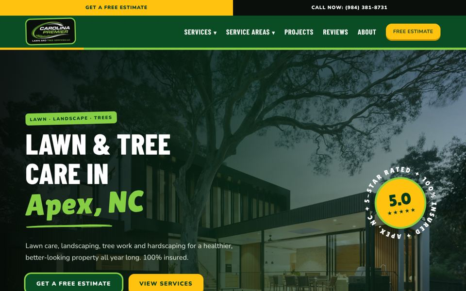
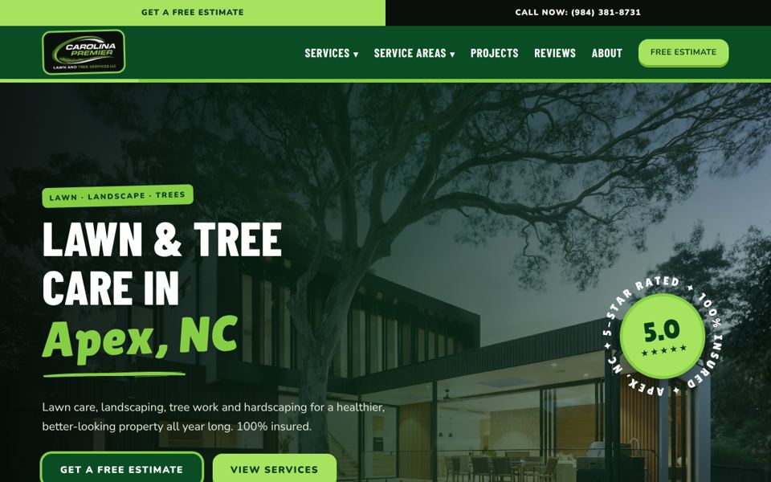
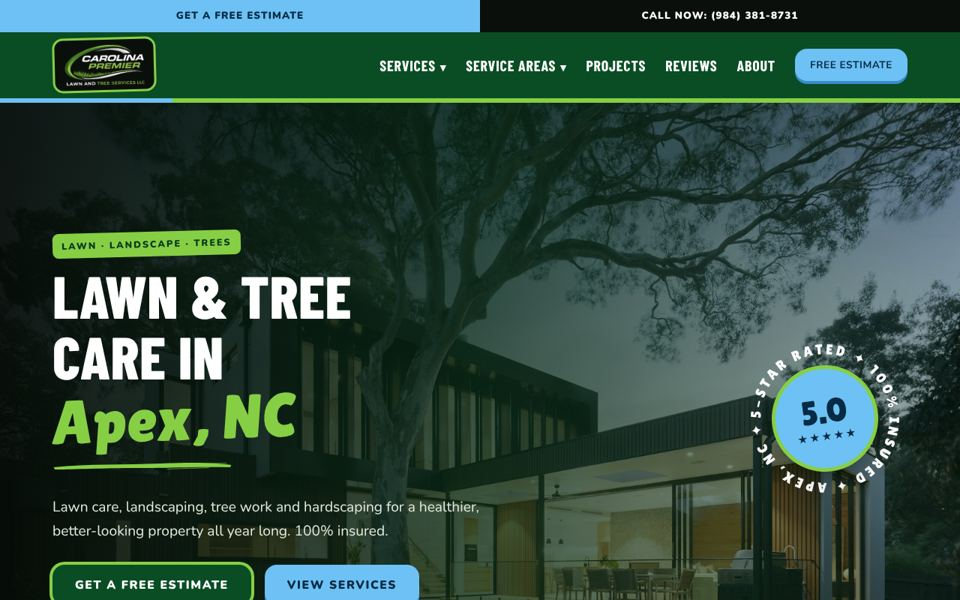
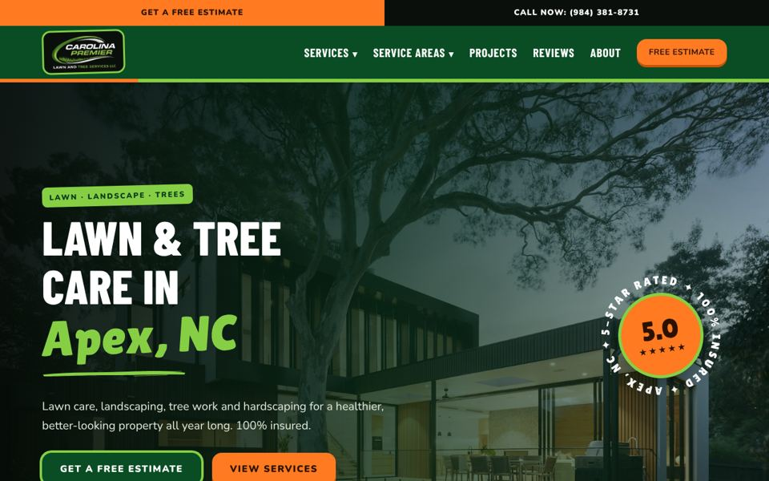
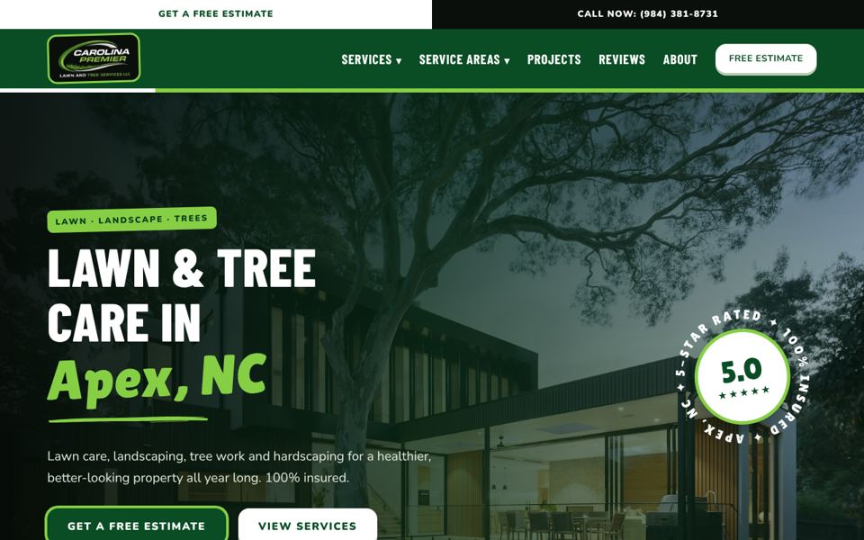
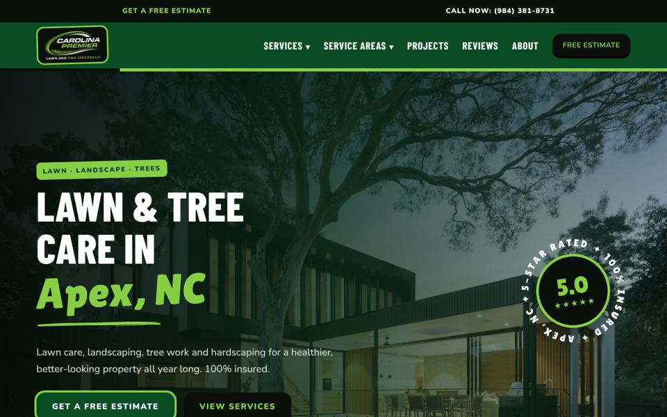

Same design as the live site. Only the accent color changes (the top bar, secondary buttons, the spinning badge center, the "Not sure what you need?" card, the stripes and the phone call bar). Greens and lime stay to match your logo. Open each one on your phone too.

What the live site uses now. Warm and energetic.
Open Sunshine Yellow →
No second color, just your greens. A brighter lime takes the yellow's place, so everything matches the logo.
Open All Green →
A sky blue accent. Fresh and clean, with a nod to North Carolina.
Open Carolina Blue →
A bold orange accent. The most playful and eye-catching option.
Open Sunset Orange →
White in place of yellow. The most professional and minimal option.
Open Clean White →
Black buttons with lime text. Sporty and high contrast, with no extra color.
Open Black & Lime →